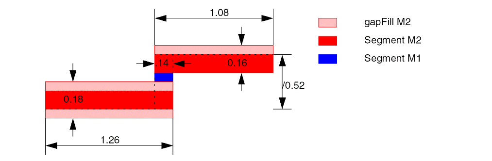

report_wire_width_stats
report_wire_width_stats
[ -all | -region {f_xlo f_ylo f_xhi f_yhi} | -set d_setObj ]
[ -exclude_type {[power][ground][clock]} ]
[ -file s_fileName ]
[ -layers {s_layerName…} ]
Description
Reports statistics on wire widths for route segments in the entire design, in the given set, or wholly within the given region. This is useful for quantifying widen_wire results. Each gapFill shape (used for wire widening) can only belong to one route segment.
The statistics include the following:
- The number of route segments (NRS) for each width and layer
- The length of route segments (LRS) for each width and layer
- The total number of route segments by layer
- The total length of route segments by layer
-
The average width of the reported route segments
This gives a quick measure for comparison when widening wires.
Arguments
Examples
The following example shows how wire widths are reported.

For this example, the following would be reported for the three route segments:
report_wire_width_stats -set [get_selection_set]
NRS = Number of Route Segments
LRS = Length of Route Segments
+-------+-----------+-----------+-----------+-----------+
| Layer | 0.14 | 0.16 | 0.18 | Total |
+-------+-----------+-----------+-----------+-----------+
| |NRS LRS |NRS LRS |NRS LRS |NRS LRS |
+-------+-----------+-----------+-----------+-----------+
|M1 | 1 0.52| 0 0| 0 0| 1 0.52|
|M2 | 0 0| 1 1.08| 1 1.28| 2 2.36|
+-------+-----------+-----------+-----------+-----------+
| TOTAL | 1 0.52| 1 1.08| 1 1.28| 3 2.88|
+-------+-----------+-----------+-----------+-----------+
The average width is .165
Related Topics
Return to top